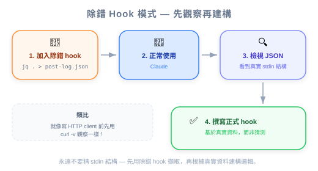

圖：Hook 完整分類 — 全部 9 種 Hook 依生命週期、是否可攔截、用途分類。
| 项目 | 内容 |
|---|---|
| 考试对应 | D3 — Claude Code Configuration & Workflows（占 20%）、D1 — Agentic Architecture（占 27%） |
| Task Statements | 1.5（Agent SDK hooks：tool call interception）、3.2（custom commands & hooks）、1.7（session state & resumption） |
| 课程来源 | claude-code-in-action / 05-hooks / Lesson 19（纯文字课程） |
除了 PreToolUse 和 PostToolUse，Claude Code 还有 7 种 hook 类型（Notification、Stop、SubagentStop、PreCompact、UserPromptSubmit、SessionStart、SessionEnd）——而且 stdin 输入结构会因 hook 类型和 tool matcher 不同而改变，所以用 jq . > log.json 的 debug hook 是开发时必备的。
圖：Hook 完整分類 — 全部 9 種 Hook 依生命週期、是否可攔截、用途分類。
课程大部分聚焦在 PreToolUse 和 PostToolUse。这节课揭开了完整面貌：
| Hook 类型 | 何时触发 | 能否阻止？ | 主要用途 |
|---|---|---|---|
PreToolUse |
工具执行前 | 可以 | 访问控制、政策 enforcement、前置条件检查 |
PostToolUse |
工具执行后 | 不行（只能反馈） | Type checking、linting、duplication review |
Notification |
Claude 发送通知时（需要权限或闲置 60 秒） | 不行 | 自定义警报、Slack/email 通知 |
Stop |
Claude 完成回应时 | 不行 | Session 日志、摘要生成、清理 |
SubagentStop |
Subagent（UI 中显示为「Task」）完成时 | 不行 | Subagent 输出验证、结果聚合 |
PreCompact |
Compact 操作前（手动或自动） | 不行 | Context 保存、压缩前 fact extraction |
UserPromptSubmit |
用户提交 prompt，Claude 处理前 | 可以 | 输入验证、prompt 预处理、日志 |
SessionStart |
开始或恢复 session 时 | 不行 | 环境设置、context 加载 |
SessionEnd |
Session 结束时 | 不行 | 清理、session 日志、状态持久化 |
💡 工程类比
把 Claude Code 想成一个 iOS app：
-PreToolUse/PostToolUse=URLProtocol拦截器（per-request middleware）
-SessionStart/SessionEnd=applicationDidFinishLaunching/applicationWillTerminate
-Notification=UNUserNotificationCenterdelegate
-Stop=Operation上的 completion handler
-PreCompact=didReceiveMemoryWarning（即将裁剪 context）
-UserPromptSubmit=textFieldShouldReturn（在处理前拦截）
每种 hook 类型收到的 stdin JSON 结构不同。而且对 PreToolUse/PostToolUse 来说，tool_input 字段会因被调用的工具而异。
{
"session_id": "9ecf22fa-edf8-4332-ae85-b6d5456eda64",
"transcript_path": "<path_to_transcript>",
"hook_event_name": "PostToolUse",
"tool_name": "TodoWrite",
"tool_input": {
"todos": [{ "content": "write a readme", "status": "pending", "priority": "medium", "id": "1" }]
},
"tool_response": {
"oldTodos": [],
"newTodos": [{ "content": "write a readme", "status": "pending", "priority": "medium", "id": "1" }]
}
}
PostToolUse 的关键字段：
- tool_name — 使用了哪个工具
- tool_input — Claude 传给工具的输入（每个工具不同）
- tool_response — 工具返回的结果（每个工具不同）
{
"session_id": "af9f50b6-f042-4773-b3e2-c3a4814765ce",
"transcript_path": "<path_to_transcript>",
"hook_event_name": "Stop",
"stop_hook_active": false
}
注意：没有 tool_name、没有 tool_input、没有 tool_response。结构完全不同。
⚠️ 写 hook 最大的陷阱
你不能假设 stdin 结构。一个为 PostToolUse on
Write写的 hook 脚本，如果收到 PostToolUse onTodoWrite就会 crash，因为tool_input的字段完全不同。访问嵌套字段前一定要先验证结构。

这节课最实用的技巧是一个通用 debug hook，把 stdin 写到文件：
"PostToolUse": [
{
"matcher": "*",
"hooks": [
{
"type": "command",
"command": "jq . > post-log.json"
}
]
}
]
它做了什么：
1. * matcher 捕捉所有工具使用
2. jq . 把 JSON stdin 格式化
3. 输出写到 post-log.json
4. 你可以检查 hook 会收到的确切数据
💡 开发工作流
- 加上 debug hook，
matcher: "*"- 正常使用 Claude Code——触发你想要 hook 的工具
- 检查
post-log.json看确切的 stdin 结构- 根据真实数据撰写你的正式 hook 脚本
- 用正式 hook 替换 debug hook
这跟用
curl -v检查 HTTP response 后再写 API client 是一样的模式。
任何 hook 类型都适用——只要换 key：
"Stop": [
{
"matcher": "*",
"hooks": [
{
"type": "command",
"command": "jq . > stop-log.json"
}
]
}
]
| 字段 | PreToolUse | PostToolUse | Stop | Notification | SubagentStop |
|---|---|---|---|---|---|
session_id |
有 | 有 | 有 | 有 | 有 |
transcript_path |
有 | 有 | 有 | 有 | 有 |
hook_event_name |
有 | 有 | 有 | 有 | 有 |
tool_name |
有 | 有 | 无 | 无 | 无 |
tool_input |
有 | 有 | 无 | 无 | 无 |
tool_response |
无 | 有 | 无 | 无 | 无 |
stop_hook_active |
无 | 无 | 有 | 无 | 无 |
💡 考试提示
transcript_path字段在所有 hook 类型中都有。这代表任何 hook 都可以访问完整的对话记录——对 logging、auditing、context extraction 很有用。
| Hook | 用途 | 示例 |
|---|---|---|
Stop |
Session 摘要日志 | 把 Claude 做了什么写到 log 文件 |
SubagentStop |
验证 subagent 输出 | 检查 research subagent 是否返回了结构化数据 |
PreCompact |
保存关键 facts | 在 context 被裁剪前 extract 关键决策 |
UserPromptSubmit |
输入预处理 | Claude 收到 prompt 前根据 template 验证 |
SessionStart |
环境启动 | 加载项目特定的 context 或验证前置条件 |
SessionEnd |
清理 | 移除临时文件、更新 session 日志 |
Notification |
自定义警报 | Claude 需要权限时发 Slack 通知 |
| ❌ 错误做法 | ✅ 正确做法 | 为什么 |
|---|---|---|
| 假设所有 hook 收到相同的 stdin 结构 | 先用 jq . > log.json 发现结构 |
stdin 因 hook 类型和 tool matcher 而异 |
直接访问 tool_input 字段不做验证 |
先检查 tool_name，再访问工具特定字段 |
不同工具有不同的 tool_input 形状 |
在 production 的重量级 hook 用 matcher: "*" |
把 matcher scope 到特定工具 | * 捕捉所有东西——冲击性能和成本 |
| 没先测试 stdin 就写 hook 脚本 | 用 debug hook → 检查 → 写正式 hook | 节省 debug 时间并防止 runtime errors |
忽略 hook 中的 transcript_path |
用它做 context-aware 的 hook 逻辑 | Transcript 提供完整对话历史给需要它的 hook |
🎯 这些概念会出现在哪些考试场景
- S2（Code Generation）：
Stophook 用于 CI pipeline 的 session logging- S4（Developer Productivity）：
SessionStart做环境设置、PreCompact做 context 保存- S5（CI/CD）：理解 hook 类型以 orchestrate pipeline
常见题型：「你需要在 Claude 完成回应后执行一个动作。应该用哪种 hook？」
答案方向：Stophook——它在 Claude 完成回应时触发，不管最后用了哪个工具。
你的 CI pipeline 用 Claude Code 做 PR review。你需要在 Claude 完成回应后把 review 结果写到 log 文件。正确的 hook 配置是哪个？
*，写到 log 文件你在写一个 PostToolUse hook，只想处理文件编辑，但它在 Claude 使用 Bash 或 Read 等其他工具时一直 crash。最可能的原因和修正是什么？
* 改成 Write|Edit|MultiEdittool_input 一定有 file_path 字段，但不同工具有不同的 tool_input 结构tool_input——改用 PreToolUse你需要验证一个 subagent（UI 中显示为「Task」）返回的是结构化 JSON 数据，然后 coordinator 才能处理它。应该用哪种 hook？